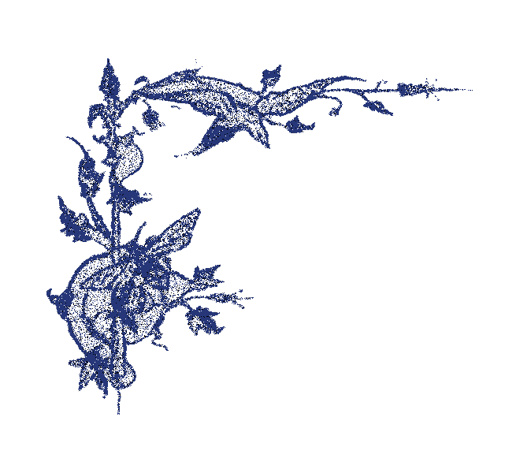
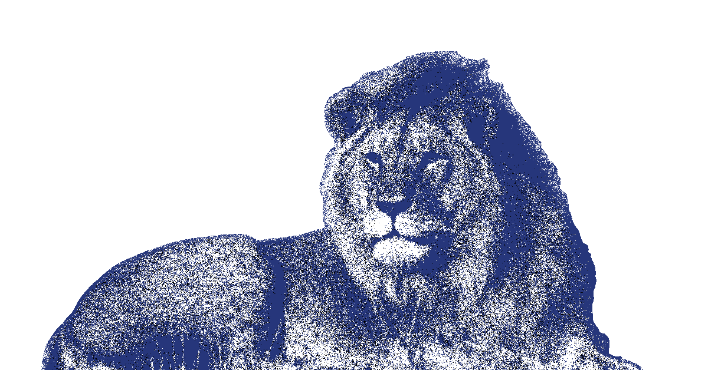
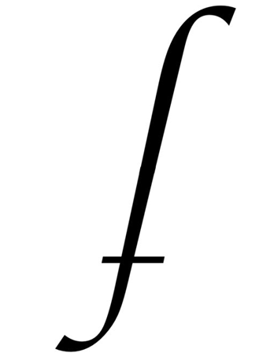
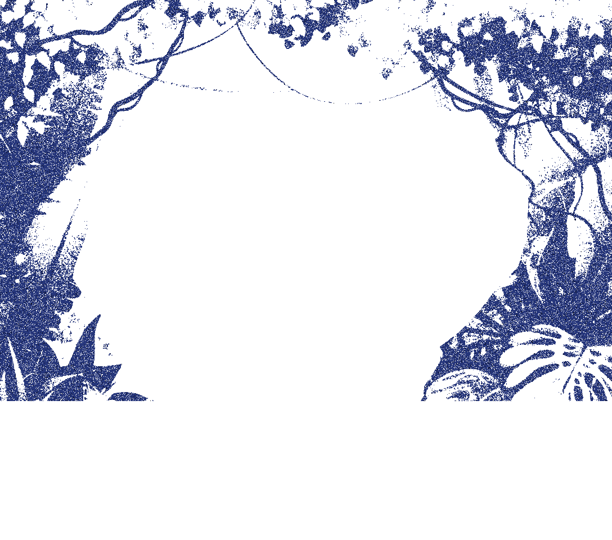

Storia



Nei bestiari antichi, gli animali venivano spesso disegnati in modo impreciso: creature mai viste, descritte per sentito dire, nate dall’immaginazione più che dall’osservazione. Quelle figure "sbagliate" erano però piene di vita, sospese tra realtà e mito.
Raccontavano lo scorrere del tempo e l’evoluzione di interi popoli e culture. In questo archivio tipografico, le lettere prendono forma come animali: segni che sembrano muoversi, nati dall’incontro tra disegno e immaginazione, sospesi tra alfabeto e creatura.

Questo progetto, quindi, vuole interpretare l'errore come forma creativa: lettere che trovano armonia nelle loro imperfezioni. Curve irregolari, dettagli insoliti e proporzioni sbilanciate rendono ogni glifo una piccola creatura tipografica.
Non sono solo caratteri, ma creature grafiche sospese tra alfabeto e bestiario, che raccontano il tempo che passa, le mode visive che cambiano e l’evoluzione del nostro modo di scrivere e vedere.


"Ogni lettera possiede un’anima."
La forma segreta richiama inaspettatamente un animale reale. Così, come i bestiari di un tempo, non vogliamo imitare la realtà, ma reinventarla, mostrando che la forma delle lettere nasconde in realtà una propria vita.